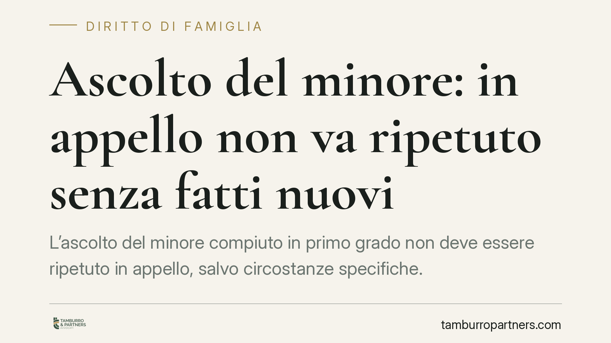

Ascolto del minore: in appello non va ripetuto senza fatti nuovi
L'ascolto del minore compiuto in primo grado non deve essere ripetuto in appello, salvo circostanze specifiche. Lo ha chiarito la Corte di Cassazione, qualificando l'ascolto come adempimento riferito al procedimento nel suo complesso e non al singolo grado di giudizio. Una lettura che tutela il minore dalla reiterazione delle audizioni e incide sulle strategie processuali nei giudizi di affido.

Il principio affermato
La Corte di Cassazione Civile è tornata sul tema dell'ascolto del minore nei procedimenti di affido, affermando un principio di rilievo operativo: l'ascolto reso in primo grado esaurisce l'adempimento processuale. In appello, di regola, non occorre procedere a un nuovo ascolto.
La chiave di lettura è concettuale. L'ascolto non è un atto da replicare in ciascun grado di giudizio, ma un adempimento unico riferito al procedimento nel suo complesso. Una volta che il minore è stato ascoltato nel rispetto delle garanzie di legge, quell'audizione conserva valore anche nella fase di gravame.
*Nota sulla fonte: il riferimento all'ordinanza (indicata nelle rassegne come n. 23613, con data di riferimento 21 luglio) va verificato sul testo ufficiale pubblicato dalla Corte, anche quanto all'anno esatto, prima di qualsiasi utilizzo in sede difensiva.*
Inquadramento normativo
L'ascolto del minore è disciplinato dall'art. 336-bis c.c., che prevede l'audizione del minore che abbia compiuto gli dodici anni e anche di età inferiore ove capace di discernimento, in tutte le procedure che lo riguardano.
Il quadro è stato ridisegnato dalla riforma Cartabia (D.Lgs. 149/2022), che ha introdotto gli artt. 473-bis.4 e seguenti c.p.c. Queste norme regolano oggi in modo espresso le modalità dell'ascolto nei procedimenti di famiglia: tempi, forme, verbalizzazione e tutela del minore. Il nuovo impianto processuale va letto in coordinamento con l'art. 336-bis c.c., che resta la norma sostanziale di riferimento sul diritto del minore a essere ascoltato.
Utile ricordare la distinzione tra ascolto diretto, condotto personalmente dal giudice, e ascolto delegato o assistito da un esperto (ad esempio uno psicologo), modalità consentita quando la tutela del minore lo richieda. In entrambi i casi l'audizione, se correttamente compiuta e documentata, assolve l'adempimento.
Quando l'ascolto va ripetuto
La regola della non ripetizione non è assoluta. L'ascolto in appello si rende necessario in due ipotesi:
- Fatti nuovi rilevanti: sopravvenienze idonee a incidere sulla posizione del minore e sulla valutazione del suo interesse, emerse dopo l'audizione di primo grado.
- Richiesta del curatore speciale: quando il soggetto chiamato a rappresentare gli interessi del minore sollecita una nuova audizione, il giudice d'appello deve valutarla.
Fuori da questi casi, la reiterazione dell'ascolto non costituisce un adempimento dovuto, e la sua omissione non vizia la decisione di secondo grado.
Perché conta: la tutela del minore
La ratio non è di mera economia processuale. La reiterazione delle audizioni espone il minore a un peso emotivo rilevante: raccontare più volte, davanti a interlocutori diversi, le proprie relazioni familiari e le proprie preferenze può risultare dannoso. Evitare ascolti superflui risponde quindi a un interesse sostanziale del minore, non a una semplice esigenza di speditezza.
Implicazioni pratiche
Per chi affronta un giudizio di affido in appello, il principio ridefinisce gli spazi difensivi. Non è sufficiente invocare la mancata ripetizione dell'ascolto per censurare la sentenza di primo grado. Occorre, piuttosto, dimostrare l'esistenza di fatti nuovi rilevanti o motivare la richiesta tramite il curatore speciale.
Sul fronte opposto, chi intende evitare un nuovo ascolto potrà far leva sulla completezza e correttezza dell'audizione già svolta, valorizzandone la verbalizzazione.
Cosa fare in concreto
- Verificare la correttezza dell'ascolto di primo grado: controllare modalità, verbalizzazione e rispetto delle garanzie degli artt. 473-bis.4 ss. c.p.c.
- Individuare i fatti nuovi: documentare puntualmente eventuali sopravvenienze intervenute dopo l'audizione, allegandole in modo specifico.
- Coinvolgere il curatore speciale quando ne ricorrano i presupposti, formulando per suo tramite un'eventuale richiesta di nuovo ascolto.
- Impostare l'appello sul merito: è opportuno concentrare le censure sulla valutazione dell'interesse del minore, più che sulla ripetizione di adempimenti già compiuti.
- Valutare l'ascolto assistito: ove si chieda una nuova audizione, considerare forme protette che riducano l'impatto sul minore.
Disclaimer
Contributo informativo a cura di Tamburro & Partners - Avv. Giuseppe Tamburro. Non costituisce parere legale.
Ogni famiglia ha il suo equilibrio.
Separazione, divorzio, affidamento, assegno: se vuoi un confronto riservato su una specifica situazione, scrivi allo studio. Ti rispondiamo entro un giorno lavorativo.